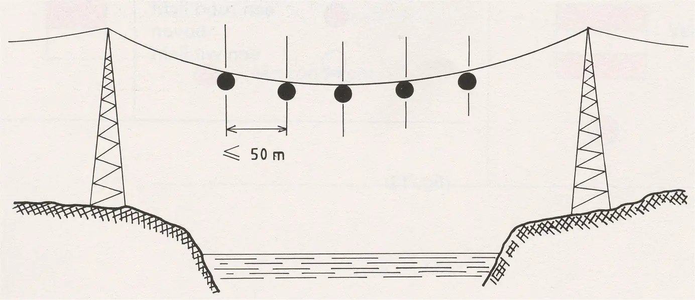
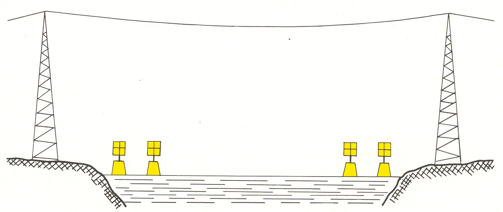

B Markering van bovengrondse lijnen
Rijnvaartpolitiereglement 1995
1. Radarreflectoren bevestigd aan de bovengrondse lijn (geeft op het radarbeeld een aantal punten waardoor de bovengrondse lijn te herkennen is).

2. Radarreflectoren geplaatst op gele drijvers die paarsgewijs dicht bij elkaar bij elke oever liggen (ieder paar drijvers geeft op het radarbeeld 2 punten naast elkaar waardoor de bovengrondse lijn te herkennen is).
